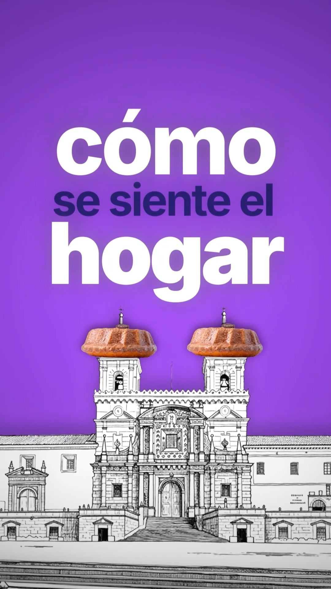
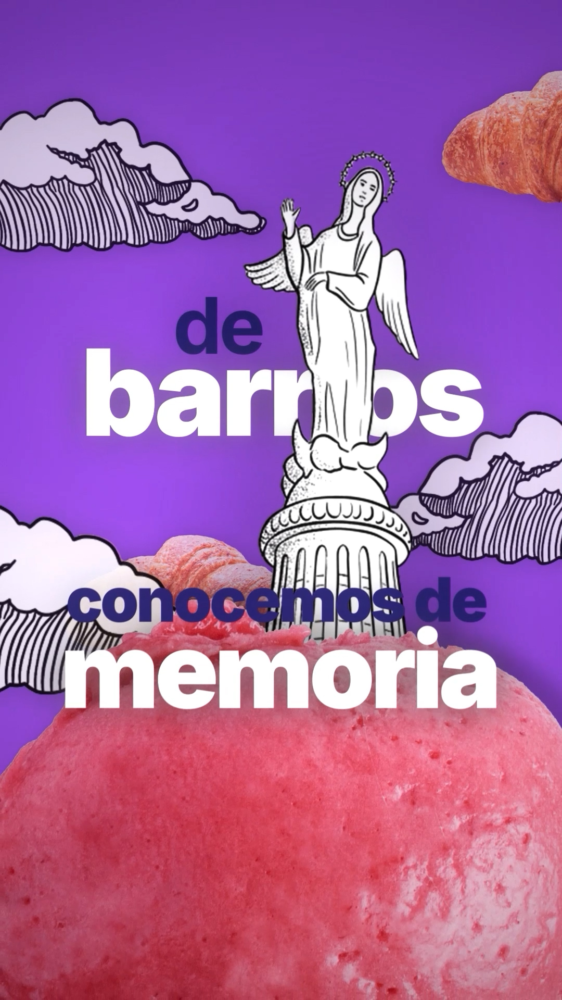
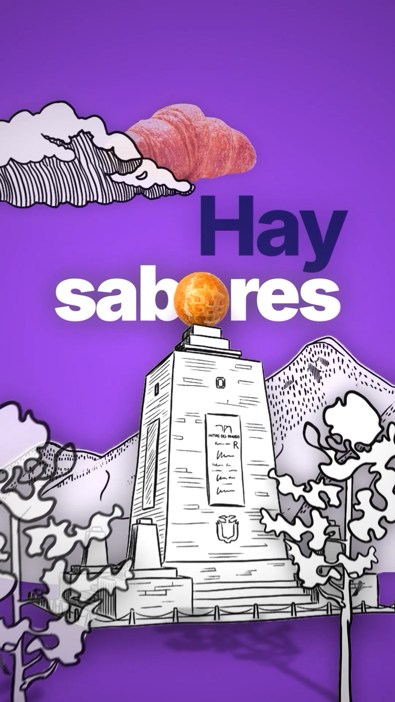
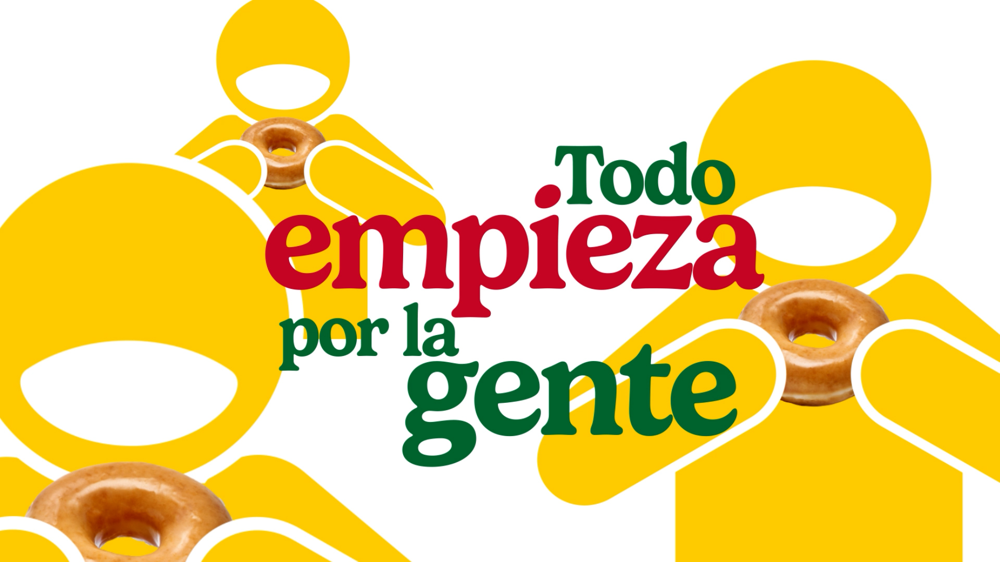
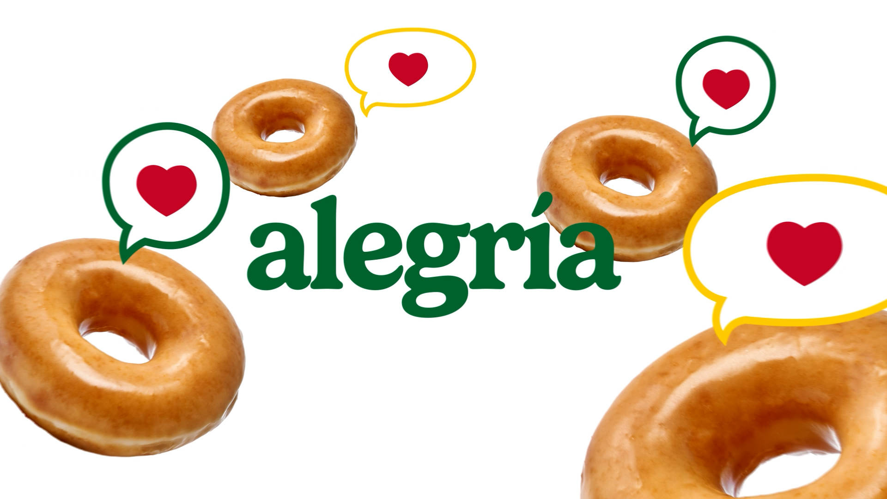

La colación del colegio. La funda comprada en la tienda de la esquina.
El paquete que se abre antes de que empiece la película. Banchis lleva
treinta años dentro de recuerdos ecuatorianos — y ninguno de esos
recuerdos está hoy en sus redes.
Portafolio y lectura de marcaJulio 2026Documento privado
Lo que vemos en Banchis
Una marca que está en todas partes menos en la conversación.
Más de treinta años produciendo desde Sangolquí. Presencia en quince provincias.
Producto en percha en Quito, Guayaquil y Cuenca. Y una línea que va mucho
más allá del chifle natural: picante, limón, cebolla, yuquitas, papitas y cueritos.
Eso es una marca consolidada. Lo que sigue no es una crítica — es la oportunidad
más grande que tienen sobre la mesa.
15
provincias con producto en percha
frente a
846
seguidores en Instagram
El último video publicado en la cuenta es de abril de 2025.
Lo construido
Marca reconocida, distribución nacional real y una historia de tres décadas. Nada de eso hay que inventarlo.
Lo no contado
El maqueño en lugar del plátano común. La planta. La gente. Toda una línea de productos que el consumidor no asocia con la marca.
La ventaja
Partir de abajo significa que todo movimiento se nota. En una marca con cien mil seguidores, tres meses de trabajo no se ven. Aquí sí.
Cómo contamos marcas de comida
Producto real dentro de mundos construidos.
Es nuestra firma y funciona particularmente bien con alimentos: fotografía real
del producto — su textura, su brillo, su color verdadero — insertada dentro de
universos gráficos ilustrados. El producto nunca se vuelve un dibujo. El mundo
alrededor sí. Así el antojo se mantiene intacto y la marca gana una voz visual propia.
Cyrano
Panadería ecuatoriana · 9:16
Una marca que lleva décadas en la mesa de los quiteños. En lugar de mostrar
producto, mostramos ciudad: San Francisco, el Panecillo, la Mitad del Mundo,
dibujados a línea, con el pan y los postres reales integrados en la arquitectura.
El resultado no habla de panadería — habla de pertenencia.
Cyrano — El sabor de Quito



Krispy Kreme
Marca global · Motion graphics y 3D
Pieza institucional de motion graphics y animación 3D sobre los valores de la
marca, producida para uso interno y hoy en exhibición en sus oficinas de la
región ibérica. Un encargo así exige precisión de manual de marca y consistencia
en cada cuadro — el mismo estándar que aplicamos a proyectos locales.
Krispy Kreme — Pieza institucional


Tres territorios para Banchis
No ideas de posteo. Territorios donde la marca puede vivir.
Cada uno responde a un objetivo distinto del negocio. No se ejecutan a la vez:
se construyen en orden, y cada uno alimenta al siguiente.
01
Un recuerdo con funda
Banchis no compite en la góndola de snacks: compite en la memoria. La colación
que el papá manda al colegio. La funda comprada en la tienda del barrio con lo
que sobró del recreo. El paquete que se abre antes de la película. Toda una
generación de ecuatorianos tiene esos recuerdos y no sabe que son de una marca
con nombre. Ese territorio ya es de Banchis — solo falta reclamarlo.
Cómo se ve: la funda real dentro de escenas ilustradas de tienda de barrio,
patio de escuela y sala de cine. Serie continua, no campaña suelta. Es el
territorio que abre todo lo demás, y va primero.
02
Banchis no es solo el chifle
Yuquitas, papitas, cueritos, y el chifle en picante, limón y cebolla. Es una
línea completa que el consumidor no tiene asociada a la marca: pide chifles
Banchis y no sabe que el resto de la percha también es suya. Ese
desconocimiento es venta que ya está producida y no se está capturando.
Cómo se ve: cada producto con personalidad propia dentro del mismo
universo gráfico — no un catálogo, un elenco. Sirve directamente a valor por
ticket y a rotación de los productos menos conocidos.
03
Maqueño, no plátano
El chifle Banchis se hace con maqueño. Es una decisión de producto que define
textura y sabor, y hoy no la sabe nadie. Sumado a treinta años de planta propia
en Sangolquí y a un equipo real detrás, ahí hay una historia de autoridad que
ninguna marca nueva puede copiar ni improvisar.
Cómo se ve: materia prima, proceso y gente — con dirección de arte, no
con video corporativo. La calidad como relato, no como sello en el empaque.
Es también el material que mejor funciona fuera del país.
Cómo se construye
Una marca de treinta años no se cuenta en una campaña.
Publicar piezas sueltas produce contenido que se pierde en el feed. Construir un
territorio produce una marca que la gente reconoce sin ver el logo. Lo segundo
necesita tiempo, y por eso trabajamos en ciclos.
3 meses
Fase de instalación
Definición de territorio y lenguaje visual propio de Banchis
Producción continua sobre un solo territorio, hasta que se reconozca
Reactivación de la cuenta con ritmo sostenido
Primera lectura de datos reales para decidir el siguiente paso
6 meses
Fase de construcción
Los tres territorios desplegados en secuencia
Pieza mayor de marca — el equivalente a lo hecho para Cyrano
Contenido que da soporte a crecimiento fuera del país, si es prioridad
Sistema de marca instalado: Banchis queda con voz visual propia
Los alcances y valores de cada ciclo se definen en conversación, según lo que
Banchis quiera priorizar primero.
Quiénes somos
Splash Labs
Agencia de producción de contenido y dirección creativa con base en Quito.
Trabajamos con marcas locales que quieren dejar de sonar locales y con marcas
globales que necesitan ejecución precisa. Estrategia, producción y edición
bajo el mismo techo.
Krispy KremePieza institucional en exhibición en la región ibérica
CyranoVideo de marca sobre Quito y memoria colectiva
Coca-Cola · MulticinesProducción y edición para campañas de marca
El siguiente paso
Hablemos de cuál de los tres territorios va primero.
Este documento no es una cotización. Es la prueba de que ya estuvimos pensando
en Banchis antes de que nos lo pidieran. Si algo de lo que está aquí resuena,
la conversación siguiente es corta: elegir por dónde empezar.